Análisis de datos espaciales en R
Manejo de datos espaciales en R
Universidad de Córdoba (España)
¿Qué son los datos espaciales?

La misma información se puede representar de varias maneras
Algunos tipos de datos se ajustan mejor que otros a ciertas formas de representarlos
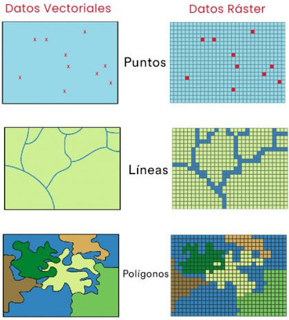
¿Cómo se localiza la información?
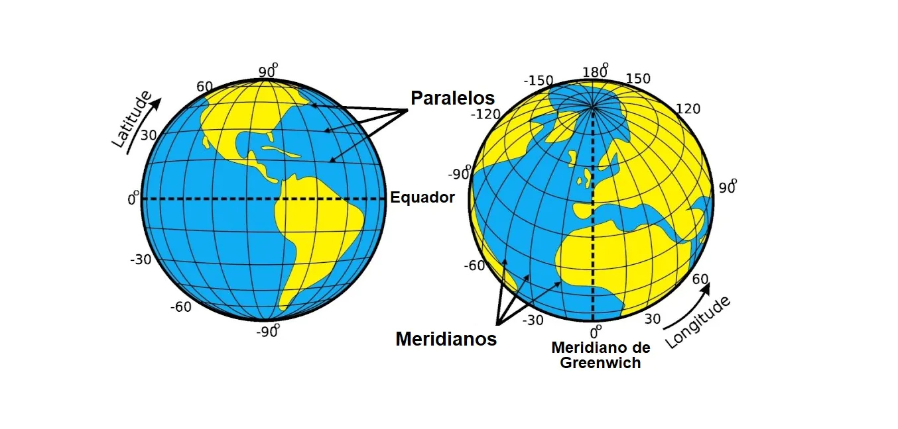No parece fácil medir los ángulos ;)
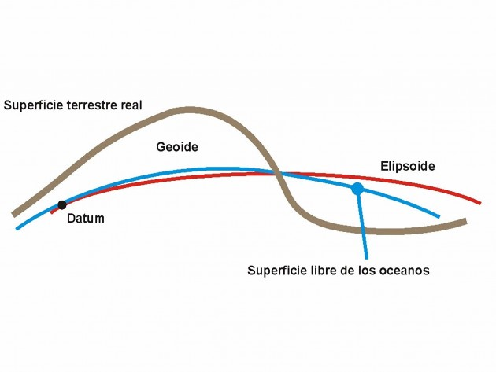Se calculan aproximaciones usando modelos de la Tierra (Datum)
Además, no es lo mismo saber donde ocurre algo que dibujar un mapa
Para ello es necesario proyectar una esfera sobre un plano
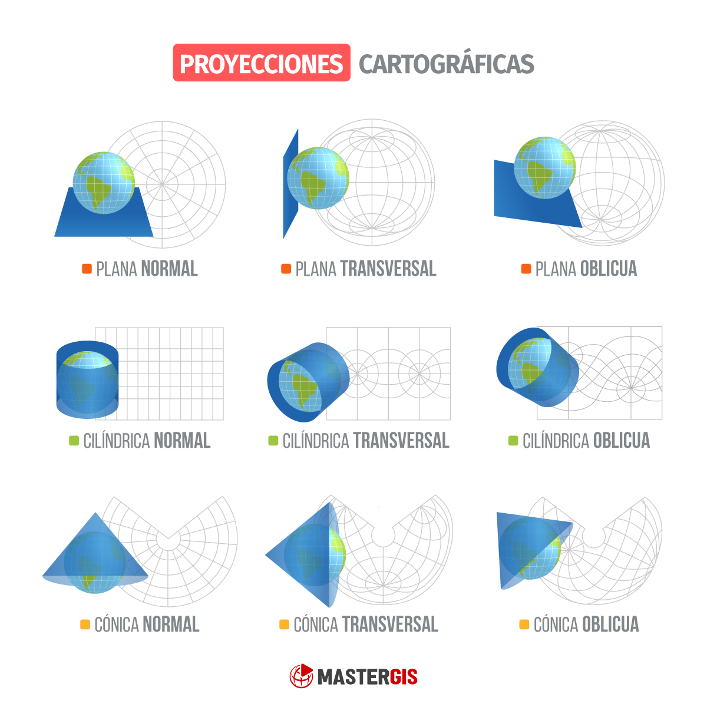
Manejando datos espaciales
Para ello usaremos el paquete Terra
Manejando datos vectoriales
Crear datos vectoriales desde cero
lon <- c(-116.7, -120.4, -116.7, -113.5, -115.5, -120.8, -119.5, -113.7, -113.7, -110.7)
lat <- c(45.3, 42.6, 38.9, 42.1, 35.7, 38.9, 36.2, 39, 41.6, 36.9)
lonlat <- cbind(lon, lat)
pts <- vect(lonlat)
pts class : SpatVector
geometry : points
dimensions : 10, 0 (geometries, attributes)
extent : -120.8, -110.7, 35.7, 45.3 (xmin, xmax, ymin, ymax)
coord. ref. : Fijaros que el apartado “coord. ref.” está vacío.
Revisamos el tipo de datos
Visualizamos la distribución espacial de los datos

Establecemos el sistema de referencia de coordenadas (CRS)
Podemos comprobar sólo el CRS de un archivo vectorial
[1] "GEOGCRS[\"unknown\",\n DATUM[\"World Geodetic System 1984\",\n ELLIPSOID[\"WGS 84\",6378137,298.257223563,\n LENGTHUNIT[\"metre\",1]],\n ID[\"EPSG\",6326]],\n PRIMEM[\"Greenwich\",0,\n ANGLEUNIT[\"degree\",0.0174532925199433],\n ID[\"EPSG\",8901]],\n CS[ellipsoidal,2],\n AXIS[\"longitude\",east,\n ORDER[1],\n ANGLEUNIT[\"degree\",0.0174532925199433,\n ID[\"EPSG\",9122]]],\n AXIS[\"latitude\",north,\n ORDER[2],\n ANGLEUNIT[\"degree\",0.0174532925199433,\n ID[\"EPSG\",9122]]]]"La ubicación sola no es muy interesante…
Vamos a simular valores de precipitación al azar, un valor para cada punto.
precipvalue <- sample(1:100, 10)
df <- data.frame(ID = 1:nrow(lonlat), precip = precipvalue)
pts <- vect(lonlat, atts = df, crs = crdref)
pts class : SpatVector
geometry : points
dimensions : 10, 2 (geometries, attributes)
extent : -120.8, -110.7, 35.7, 45.3 (xmin, xmax, ymin, ymax)
coord. ref. : +proj=longlat +datum=WGS84 +no_defs
names : ID precip
type : <int> <int>
values : 1 38
2 2
3 94Visualizamos las precipitaciones en su contexto espacial
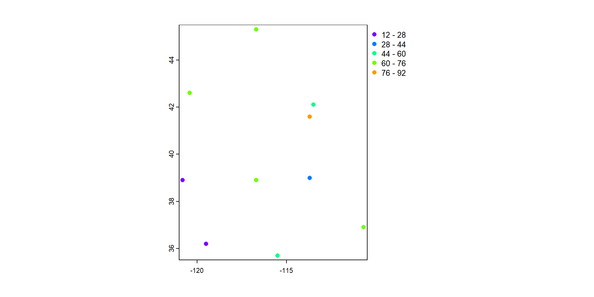Vamos a generar ahora un segundo conjunto de puntos…
lon2 <- c(-116.8, -114.2, -112.9, -111.9, -114.2, -115.4, -117.7)
lat2 <- c(41.3, 42.9, 42.4, 39.8, 37.6, 38.3, 37.6)
lonlat2 <- cbind(id = c(1,1,1,1,1,1,1), part = c(1,1,1,1,1,1,1), lon2, lat2)
lonlat2 id part lon2 lat2
[1,] 1 1 -116.8 41.3
[2,] 1 1 -114.2 42.9
[3,] 1 1 -112.9 42.4
[4,] 1 1 -111.9 39.8
[5,] 1 1 -114.2 37.6
[6,] 1 1 -115.4 38.3
[7,] 1 1 -117.7 37.6… pero para crear datos vectoriales de líneas…
class : SpatVector
geometry : lines
dimensions : 1, 0 (geometries, attributes)
extent : -117.7, -111.9, 37.6, 42.9 (xmin, xmax, ymin, ymax)
coord. ref. : +proj=longlat +datum=WGS84 +no_defs 
… o un datos vectoriales de polígonos.
class : SpatVector
geometry : polygons
dimensions : 1, 0 (geometries, attributes)
extent : -117.7, -111.9, 37.6, 42.9 (xmin, xmax, ymin, ymax)
coord. ref. : +proj=longlat +datum=WGS84 +no_defs 
Lo más normal es usar datos generados con un SIG.
Podemos descargar datos de internet (v.gr. GADM) y cargarlos desde nuestro disco duro.
Lo más normal es usar datos generados con un SIG.
Pero hay paquetes que dan acceso a datos vectoriales directamente en R (v.gr. geodata)
class : SpatVector
geometry : polygons
dimensions : 24, 11 (geometries, attributes)
extent : -73.56056, -53.59184, -55.06153, -21.78137 (xmin, xmax, ymin, ymax)
coord. ref. : lon/lat WGS 84 (EPSG:4326)
names : GID_1 GID_0 COUNTRY NAME_1 VARNAME_1 NL_NAME_1
type : <chr> <chr> <chr> <chr> <chr> <chr>
values : ARG.1_1 ARG Argentina Buenos Aires Baires|Buenos ~ NA
ARG.2_1 ARG Argentina Catamarca NA NA
ARG.3_1 ARG Argentina Chaco El Chaco|Presi~ NA
TYPE_1 ENGTYPE_1 CC_1 HASC_1 ISO_1
<chr> <chr> <chr> <chr> <chr>
Provincia Province NA AR.BA AR-B
Provincia Province NA AR.CT AR-K
Provincia Province NA AR.CC AR-HVeamos si se parece a lo que conocemos…
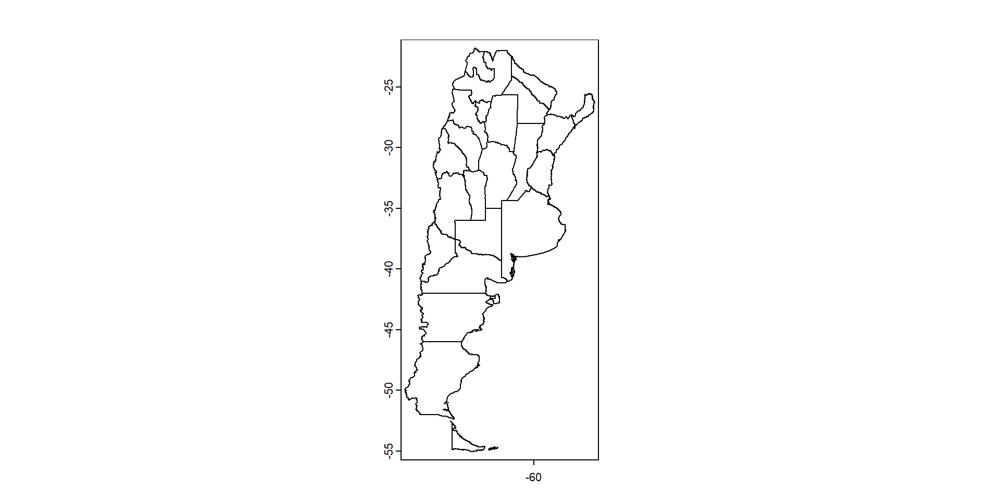Si quieres guardar esos datos para no tener que volver a descargarlos, puedes escribir ficheros vectoriales
Comprobamos el CRS de alguno de nuestros datos
[1] "GEOGCRS[\"WGS 84\",\n DATUM[\"World Geodetic System 1984\",\n ELLIPSOID[\"WGS 84\",6378137,298.257223563,\n LENGTHUNIT[\"metre\",1]]],\n PRIMEM[\"Greenwich\",0,\n ANGLEUNIT[\"degree\",0.0174532925199433]],\n CS[ellipsoidal,2],\n AXIS[\"geodetic latitude (Lat)\",north,\n ORDER[1],\n ANGLEUNIT[\"degree\",0.0174532925199433]],\n AXIS[\"geodetic longitude (Lon)\",east,\n ORDER[2],\n ANGLEUNIT[\"degree\",0.0174532925199433]],\n ID[\"EPSG\",4326]]"Se puede borrar el CRS del conjunto de datos
O se puede especificar a mano (estandar PROJ.4)
arg_falso_utm <- arg
crs(arg_falso_utm) <- "+proj=utm +zone=19 +south +datum=WGS84 +units=m +no_defs +type=crs"
crs(arg_falso_utm)[1] "PROJCRS[\"unknown\",\n BASEGEOGCRS[\"unknown\",\n DATUM[\"World Geodetic System 1984\",\n ELLIPSOID[\"WGS 84\",6378137,298.257223563,\n LENGTHUNIT[\"metre\",1]],\n ID[\"EPSG\",6326]],\n PRIMEM[\"Greenwich\",0,\n ANGLEUNIT[\"degree\",0.0174532925199433],\n ID[\"EPSG\",8901]]],\n CONVERSION[\"UTM zone 19S\",\n METHOD[\"Transverse Mercator\",\n ID[\"EPSG\",9807]],\n PARAMETER[\"Latitude of natural origin\",0,\n ANGLEUNIT[\"degree\",0.0174532925199433],\n ID[\"EPSG\",8801]],\n PARAMETER[\"Longitude of natural origin\",-69,\n ANGLEUNIT[\"degree\",0.0174532925199433],\n ID[\"EPSG\",8802]],\n PARAMETER[\"Scale factor at natural origin\",0.9996,\n SCALEUNIT[\"unity\",1],\n ID[\"EPSG\",8805]],\n PARAMETER[\"False easting\",500000,\n LENGTHUNIT[\"metre\",1],\n ID[\"EPSG\",8806]],\n PARAMETER[\"False northing\",10000000,\n LENGTHUNIT[\"metre\",1],\n ID[\"EPSG\",8807]],\n ID[\"EPSG\",17019]],\n CS[Cartesian,2],\n AXIS[\"(E)\",east,\n ORDER[1],\n LENGTHUNIT[\"metre\",1,\n ID[\"EPSG\",9001]]],\n AXIS[\"(N)\",north,\n ORDER[2],\n LENGTHUNIT[\"metre\",1,\n ID[\"EPSG\",9001]]]]"O se puede especificar con los códigos EPSG
[1] "PROJCRS[\"WGS 84 / UTM zone 19S\",\n BASEGEOGCRS[\"WGS 84\",\n ENSEMBLE[\"World Geodetic System 1984 ensemble\",\n MEMBER[\"World Geodetic System 1984 (Transit)\"],\n MEMBER[\"World Geodetic System 1984 (G730)\"],\n MEMBER[\"World Geodetic System 1984 (G873)\"],\n MEMBER[\"World Geodetic System 1984 (G1150)\"],\n MEMBER[\"World Geodetic System 1984 (G1674)\"],\n MEMBER[\"World Geodetic System 1984 (G1762)\"],\n MEMBER[\"World Geodetic System 1984 (G2139)\"],\n ELLIPSOID[\"WGS 84\",6378137,298.257223563,\n LENGTHUNIT[\"metre\",1]],\n ENSEMBLEACCURACY[2.0]],\n PRIMEM[\"Greenwich\",0,\n ANGLEUNIT[\"degree\",0.0174532925199433]],\n ID[\"EPSG\",4326]],\n CONVERSION[\"UTM zone 19S\",\n METHOD[\"Transverse Mercator\",\n ID[\"EPSG\",9807]],\n PARAMETER[\"Latitude of natural origin\",0,\n ANGLEUNIT[\"degree\",0.0174532925199433],\n ID[\"EPSG\",8801]],\n PARAMETER[\"Longitude of natural origin\",-69,\n ANGLEUNIT[\"degree\",0.0174532925199433],\n ID[\"EPSG\",8802]],\n PARAMETER[\"Scale factor at natural origin\",0.9996,\n SCALEUNIT[\"unity\",1],\n ID[\"EPSG\",8805]],\n PARAMETER[\"False easting\",500000,\n LENGTHUNIT[\"metre\",1],\n ID[\"EPSG\",8806]],\n PARAMETER[\"False northing\",10000000,\n LENGTHUNIT[\"metre\",1],\n ID[\"EPSG\",8807]]],\n CS[Cartesian,2],\n AXIS[\"(E)\",east,\n ORDER[1],\n LENGTHUNIT[\"metre\",1]],\n AXIS[\"(N)\",north,\n ORDER[2],\n LENGTHUNIT[\"metre\",1]],\n USAGE[\n SCOPE[\"Navigation and medium accuracy spatial referencing.\"],\n AREA[\"Between 72°W and 66°W, southern hemisphere between 80°S and equator, onshore and offshore. Argentina. Bolivia. Brazil. Chile. Colombia. Peru.\"],\n BBOX[-80,-72,0,-66]],\n ID[\"EPSG\",32719]]"Notad que eso cambia el sistema de referencia pero no las coordenadas en si
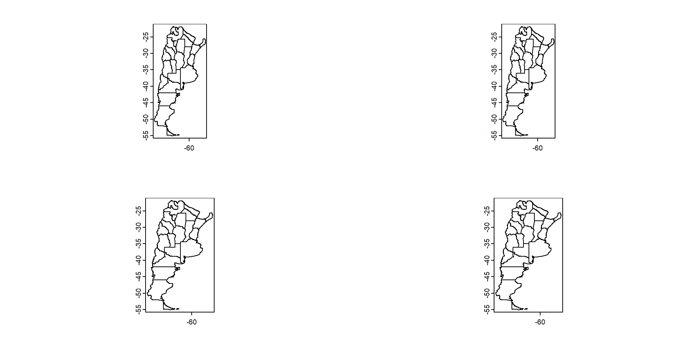Si queremos convertir coordenadas entre CRS tenemos que proyectar los datos
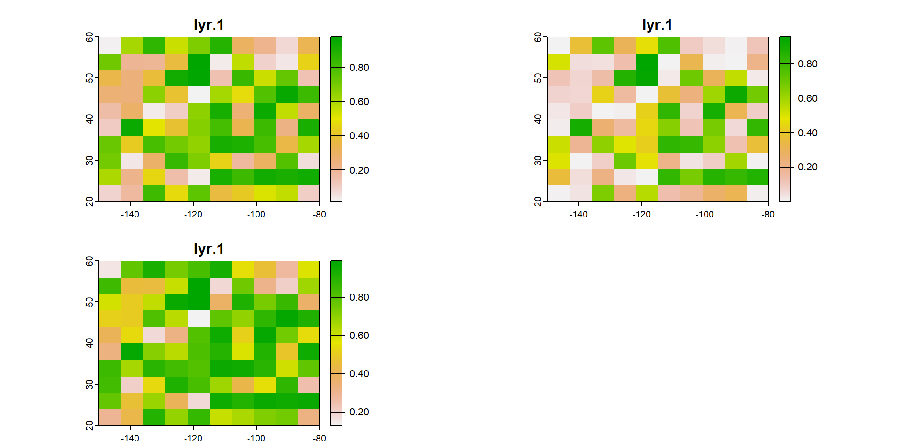Momento para practicar
Ejercicios de clase
Parte 1: Trabajando con datos vectoriales
Manejando datos raster
Crear datos raster
class : SpatRaster
dimensions : 10, 10, 1 (nrow, ncol, nlyr)
resolution : 7, 4 (x, y)
extent : -150, -80, 20, 60 (xmin, xmax, ymin, ymax)
coord. ref. : lon/lat WGS 84 (CRS84) (OGC:CRS84) Graficar datos raster
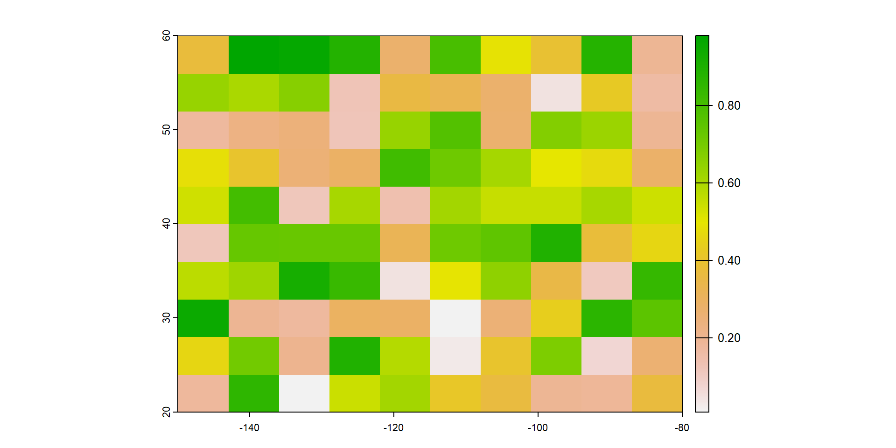Operar con datos raster
Combinar raster para crear un objeto multicapa
class : SpatRaster
dimensions : 10, 10, 3 (nrow, ncol, nlyr)
resolution : 7, 4 (x, y)
extent : -150, -80, 20, 60 (xmin, xmax, ymin, ymax)
coord. ref. : lon/lat WGS 84 (CRS84) (OGC:CRS84)
source(s) : memory
names : lyr.1, lyr.1, lyr.1
min values : 0.005019834, 2.519873e-05, 0.07085079
max values : 0.983665176, 9.675972e-01, 0.99179896 Graficar datos multicapa
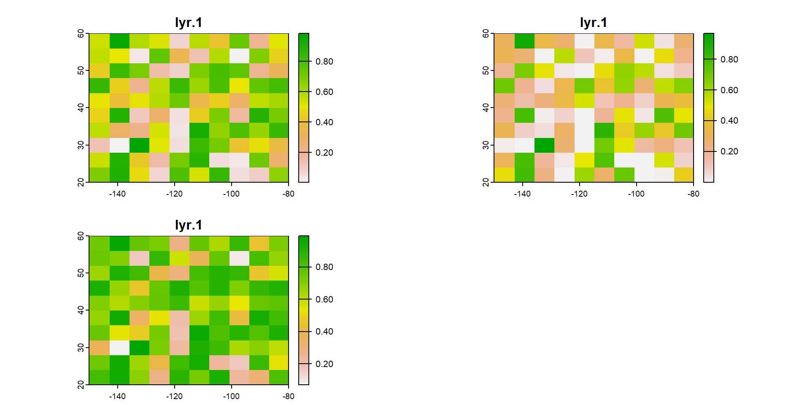Extraer capas sueltas de objetos multicapa
Como con datos vectoriales, lo normal es cargar datos ya generados en SIG.
Para ello podemos descargar datos de distintas fuentes (v.gr. WorldClim)…
class : SpatRaster
dimensions : 4080, 2460, 12 (nrow, ncol, nlyr)
resolution : 0.008333333, 0.008333333 (x, y)
extent : -74, -53.5, -55.5, -21.5 (xmin, xmax, ymin, ymax)
coord. ref. : lon/lat WGS 84 (EPSG:4326)
source : tavg_arg.tif
names : ARG_w~avg_1, ARG_w~avg_2, ARG_w~avg_3, ARG_w~avg_4, ARG_w~avg_5, ARG_w~avg_6, ...
min values : -11.1, -11.8, -12.5, -14.5, -16.7, -19.8, ...
max values : 29.2, 28.4, 27.3, 25.0, 22.2, 21.0, ... … o podemos usar el paquete geodata para acceder directamente a esa información
Veamos si se parece a lo que conocemos…

Si queremos reutilizar los datos y no tener que volver a descargarlos, también podemos escribirlos en un fichero de datos raster
También se pueden proyectar datos raster
|---------|---------|---------|---------|
=========================================
class : SpatRaster
dimensions : 4455, 2454, 12 (nrow, ncol, nlyr)
resolution : 871.5251, 871.5251 (x, y)
extent : -18378.29, 2120344, 3739870, 7622514 (xmin, xmax, ymin, ymax)
coord. ref. : WGS 84 / UTM zone 19S (EPSG:32719)
source : spat_479c34c2467f_18332.tif
names : ARG_w~avg_1, ARG_w~avg_2, ARG_w~avg_3, ARG_w~avg_4, ARG_w~avg_5, ARG_w~avg_6, ...
min values : -10.04721, -10.73881, -11.50141, -13.56402, -15.82001, -19.13045, ...
max values : 29.20000, 28.40000, 27.30000, 25.00000, 22.20000, 20.99198, ... Ahora si que las coordenadas aparecen “desplazadas”

Notad que no hay una correspondencia exacta de píxeles.
Para controlar el número de pixeles y su resolución lo normal es crear antes una plantilla
class : SpatRaster
dimensions : 4853, 2673, 12 (nrow, ncol, nlyr)
resolution : 800, 800 (x, y)
extent : -18378.29, 2120022, 3739870, 7622270 (xmin, xmax, ymin, ymax)
coord. ref. : WGS 84 / UTM zone 19S (EPSG:32719)
|---------|---------|---------|---------|
=========================================
class : SpatRaster
dimensions : 4853, 2673, 12 (nrow, ncol, nlyr)
resolution : 800, 800 (x, y)
extent : -18378.29, 2120022, 3739870, 7622270 (xmin, xmax, ymin, ymax)
coord. ref. : WGS 84 / UTM zone 19S (EPSG:32719)
source : spat_479c16103778_18332.tif
names : ARG_w~avg_1, ARG_w~avg_2, ARG_w~avg_3, ARG_w~avg_4, ARG_w~avg_5, ARG_w~avg_6, ...
min values : -10.77633, -11.47463, -12.17463, -14.20292, -16.40292, -19.51049, ...
max values : 29.20000, 28.40000, 27.30000, 25.00000, 22.20000, 20.95641, ... Veamos el resultado
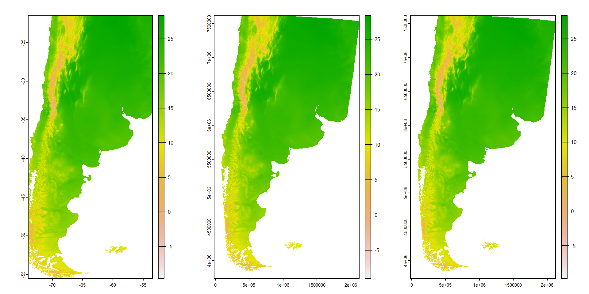class : SpatRaster
dimensions : 4080, 2460, 1 (nrow, ncol, nlyr)
resolution : 0.008333333, 0.008333333 (x, y)
extent : -74, -53.5, -55.5, -21.5 (xmin, xmax, ymin, ymax)
coord. ref. : lon/lat WGS 84 (EPSG:4326)
source : tavg_arg.tif
name : ARG_wc2.1_30s_tavg_2
min value : -11.8
max value : 28.4 class : SpatRaster
dimensions : 4455, 2454, 1 (nrow, ncol, nlyr)
resolution : 871.5251, 871.5251 (x, y)
extent : -18378.29, 2120344, 3739870, 7622514 (xmin, xmax, ymin, ymax)
coord. ref. : WGS 84 / UTM zone 19S (EPSG:32719)
source : spat_479c34c2467f_18332.tif
name : ARG_wc2.1_30s_tavg_2
min value : -10.73881
max value : 28.40000 class : SpatRaster
dimensions : 4853, 2673, 1 (nrow, ncol, nlyr)
resolution : 800, 800 (x, y)
extent : -18378.29, 2120022, 3739870, 7622270 (xmin, xmax, ymin, ymax)
coord. ref. : WGS 84 / UTM zone 19S (EPSG:32719)
source : spat_479c16103778_18332.tif
name : ARG_wc2.1_30s_tavg_2
min value : -11.47463
max value : 28.40000 Momento de practicar por vuestra cuenta
Ejercicios de clase
Parte 2. Manejo de datos raster
Manipular datos espaciales
Podemos dibujar los mapas con colores en base a alguna información de los atributos.
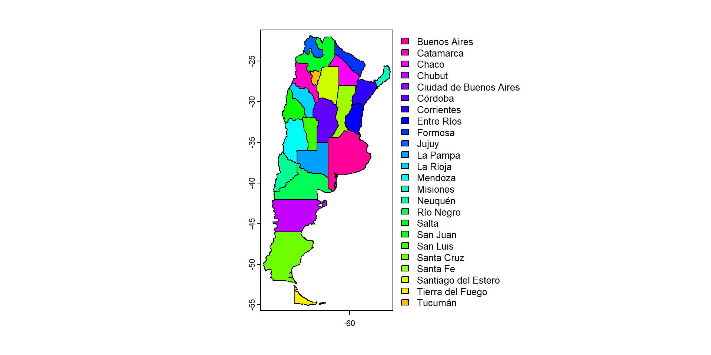Podemos combinar información raster y vectorial en el mismo mapa
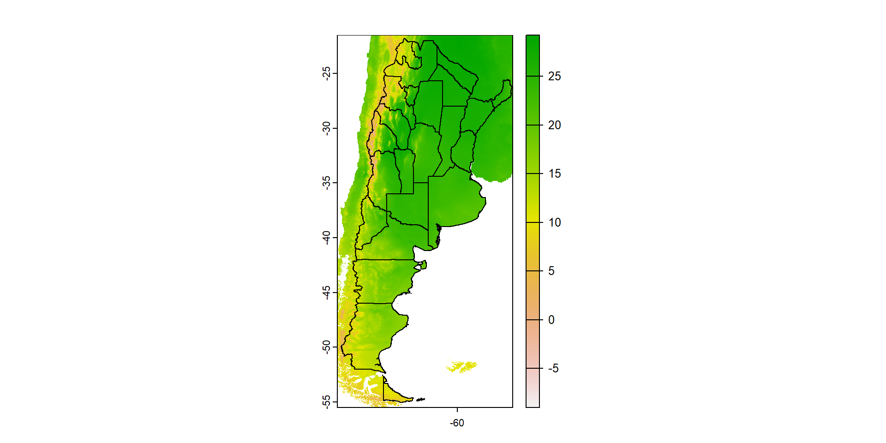También se puede extraer la información de los atributos en formato data.frame para trabajar con ella de forma estadística.
GID_1 GID_0 COUNTRY NAME_1
1 ARG.1_1 ARG Argentina Buenos Aires
2 ARG.2_1 ARG Argentina Catamarca
3 ARG.3_1 ARG Argentina Chaco
4 ARG.4_1 ARG Argentina Chubut
5 ARG.5_1 ARG Argentina Ciudad de Buenos Aires
6 ARG.6_1 ARG Argentina Córdoba
VARNAME_1 NL_NAME_1 TYPE_1 ENGTYPE_1
1 Baires|Buenos Ayres <NA> Provincia Province
2 <NA> <NA> Provincia Province
3 El Chaco|Presidente Juan Peron <NA> Provincia Province
4 <NA> <NA> Provincia Province
5 BUENOS AIRES D.F.|Capital Federa <NA> Distrito Federal Federal District
6 Cordova <NA> Provincia Province
CC_1 HASC_1 ISO_1
1 <NA> AR.BA AR-B
2 <NA> AR.CT AR-K
3 <NA> AR.CC AR-H
4 <NA> AR.CH AR-U
5 <NA> AR.DF <NA>
6 <NA> AR.CB <NA>O puedo extraer la información de un sólo campo de los atributos.
[1] "Buenos Aires" "Catamarca" "Chaco"
[4] "Chubut" "Ciudad de Buenos Aires" "Córdoba"
[7] "Corrientes" "Entre Ríos" "Formosa"
[10] "Jujuy" "La Pampa" "La Rioja"
[13] "Mendoza" "Misiones" "Neuquén"
[16] "Río Negro" "Salta" "San Juan"
[19] "San Luis" "Santa Cruz" "Santa Fe"
[22] "Santiago del Estero" "Tierra del Fuego" "Tucumán" class : SpatVector
geometry : polygons
dimensions : 24, 1 (geometries, attributes)
extent : -73.56056, -53.59184, -55.06153, -21.78137 (xmin, xmax, ymin, ymax)
coord. ref. : lon/lat WGS 84 (EPSG:4326)
names : NAME_1
type : <chr>
values : Buenos Aires
Catamarca
ChacoNotad que en este caso, las dos formas de extraer información no se comportan exactamente igual.
También podemos extraer las características geográficas (espaciales)
A veces, necesitamos incorporar información a nuestros datos vectoriales.
class : SpatVector
geometry : polygons
dimensions : 24, 12 (geometries, attributes)
extent : -73.56056, -53.59184, -55.06153, -21.78137 (xmin, xmax, ymin, ymax)
coord. ref. : lon/lat WGS 84 (EPSG:4326)
names : GID_1 GID_0 COUNTRY NAME_1 VARNAME_1 NL_NAME_1
type : <chr> <chr> <chr> <chr> <chr> <chr>
values : ARG.1_1 ARG Argentina Buenos Aires Baires|Buenos ~ NA
ARG.2_1 ARG Argentina Catamarca NA NA
ARG.3_1 ARG Argentina Chaco El Chaco|Presi~ NA
TYPE_1 ENGTYPE_1 CC_1 HASC_1 ISO_1 lets
<chr> <chr> <chr> <chr> <chr> <chr>
Provincia Province NA AR.BA AR-B r
Provincia Province NA AR.CT AR-K t
Provincia Province NA AR.CC AR-H b [1] 6542992.70 2141772.81 1833193.58 4072812.99 75022.34 1898965.96
[7] 1546899.19 1391962.59 1887284.93 1410538.99 1816741.56 1613964.82
[13] 2160729.22 1272355.56 2006884.02 2829645.14 3018996.89 1897253.64
[19] 1379291.29 3552443.52 2159600.76 1709915.38 2035550.57 814874.32 [1] 307005689751 101325015569 99764195922 224358261357 211011750
[6] 164663835095 88958640476 78008027779 75592720001 53125295415
[11] 142947760813 91104159966 148772281932 29980009644 94504843837
[16] 202539975187 155196050532 88821613819 75844534099 242892543838
[21] 133097028860 136911867268 20884464648 22539627987¿Qué pasa si quiero borrar una columna?
A veces tenemos los datos en una tabla aparte
Podemos vincularla con los datos de los atributos vectoriales, pero necesitamos un campo en común.
Me descargué datos del censo poblacional del país
d <- read.csv("data/c2022_tp_c_resumen.csv", header = TRUE, encoding = "latin1")
arg <- merge(arg, d, by.x = "NAME_1", by.y = "provincia")
arg class : SpatVector
geometry : polygons
dimensions : 24, 14 (geometries, attributes)
extent : -73.56056, -53.59184, -55.06153, -21.78137 (xmin, xmax, ymin, ymax)
coord. ref. : lon/lat WGS 84 (EPSG:4326)
names : NAME_1 GID_1 GID_0 COUNTRY VARNAME_1 NL_NAME_1
type : <chr> <chr> <chr> <chr> <chr> <chr>
values : Buenos Aires ARG.1_1 ARG Argentina Baires|Buenos ~ NA
Catamarca ARG.2_1 ARG Argentina NA NA
Chaco ARG.3_1 ARG Argentina El Chaco|Presi~ NA
TYPE_1 ENGTYPE_1 CC_1 HASC_1 (and 4 more)
<chr> <chr> <chr> <chr>
Provincia Province NA AR.BA
Provincia Province NA AR.CT
Provincia Province NA AR.CC Veamos como se ve la población argentina por provincias…
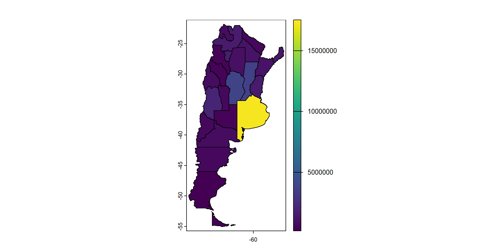También se puede filtrar la información para una o varias entidades dentro de los datos.
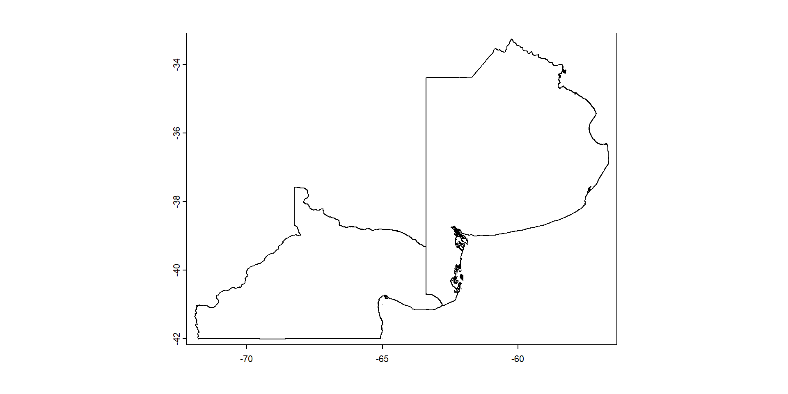A veces necesitamos combinar información de varios polígonos en uno de mayor tamaño
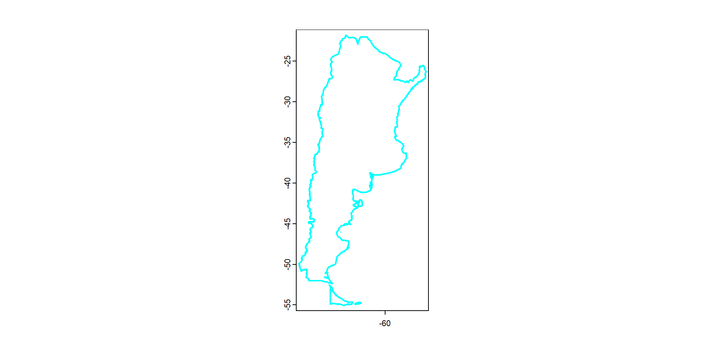En los objetos raster también se pueden hacer agregaciones, pero normalmente para cambiar la resolución de los datos
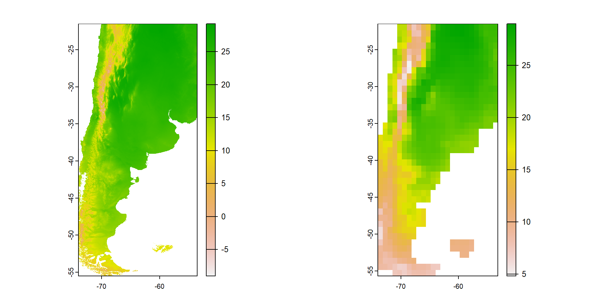En otras ocasiones tenemos dos capas vectoriales y necesitamos quedarnos sólo con datos que quedan dentro de una de ellas
clip <- rast(ext = c(-70, -60, -47, -30), nrow = 2, ncol = 2)
values(clip) <- 1:4
names(clip) <- "Zona"
clip <- as.polygons(clip)
clip class : SpatVector
geometry : polygons
dimensions : 4, 1 (geometries, attributes)
extent : -70, -60, -47, -30 (xmin, xmax, ymin, ymax)
coord. ref. : lon/lat WGS 84 (CRS84) (OGC:CRS84)
names : Zona
type : <int>
values : 1
2
3
Los objetos raster también se pueden cortar con un vectorial
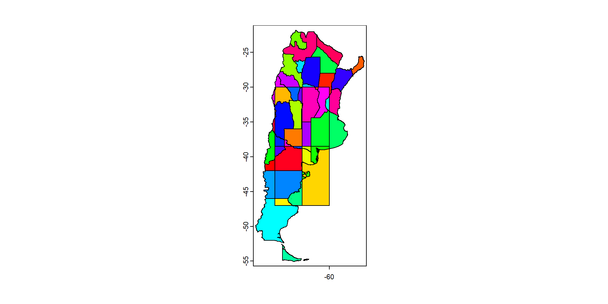Otras veces necesitamos combinar los vectores de dos ficheros diferentes
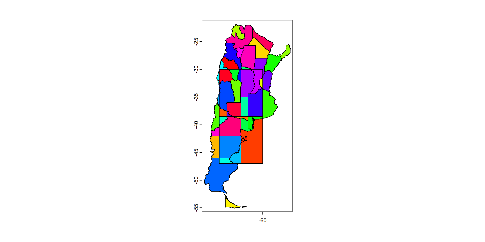En estudios de biodiversidad, es muy frecuente necesitar extraer información de una capa vectorial en los puntos, líneas o polígonos de otra capa vectorial
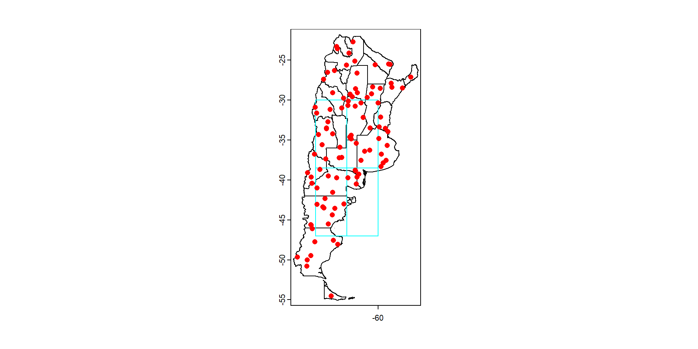 id.y NAME_1 GID_1 GID_0 COUNTRY
1 1 Chubut ARG.4_1 ARG Argentina
2 2 La Rioja ARG.12_1 ARG Argentina
3 3 Santa Fe ARG.21_1 ARG Argentina
4 4 Corrientes ARG.7_1 ARG Argentina
5 5 Río Negro ARG.16_1 ARG Argentina
6 6 Santiago del Estero ARG.22_1 ARG Argentina
7 7 Neuquén ARG.15_1 ARG Argentina
8 8 Chubut ARG.4_1 ARG Argentina
9 9 La Rioja ARG.12_1 ARG Argentina
10 10 Santiago del Estero ARG.22_1 ARG Argentina
11 11 San Luis ARG.19_1 ARG Argentina
12 12 Chubut ARG.4_1 ARG Argentina
13 13 Buenos Aires ARG.1_1 ARG Argentina
14 14 Mendoza ARG.13_1 ARG Argentina
15 15 Buenos Aires ARG.1_1 ARG Argentina
16 16 Neuquén ARG.15_1 ARG Argentina
17 17 Buenos Aires ARG.1_1 ARG Argentina
18 18 Chubut ARG.4_1 ARG Argentina
19 19 Neuquén ARG.15_1 ARG Argentina
20 20 Córdoba ARG.6_1 ARG Argentina
21 21 Córdoba ARG.6_1 ARG Argentina
22 22 Córdoba ARG.6_1 ARG Argentina
23 23 Río Negro ARG.16_1 ARG Argentina
24 24 Mendoza ARG.13_1 ARG Argentina
25 25 La Rioja ARG.12_1 ARG Argentina
26 26 La Pampa ARG.11_1 ARG Argentina
27 27 Buenos Aires ARG.1_1 ARG Argentina
28 28 Santa Cruz ARG.20_1 ARG Argentina
29 29 La Rioja ARG.12_1 ARG Argentina
30 30 Santa Cruz ARG.20_1 ARG Argentina
31 31 Salta ARG.17_1 ARG Argentina
32 32 Mendoza ARG.13_1 ARG Argentina
33 33 Chaco ARG.3_1 ARG Argentina
34 34 Santa Fe ARG.21_1 ARG Argentina
35 35 Santa Cruz ARG.20_1 ARG Argentina
36 36 San Juan ARG.18_1 ARG Argentina
37 37 Salta ARG.17_1 ARG Argentina
38 38 Tierra del Fuego ARG.23_1 ARG Argentina
39 39 Mendoza ARG.13_1 ARG Argentina
40 40 Chaco ARG.3_1 ARG Argentina
41 41 Salta ARG.17_1 ARG Argentina
42 42 Córdoba ARG.6_1 ARG Argentina
43 43 La Pampa ARG.11_1 ARG Argentina
44 44 Buenos Aires ARG.1_1 ARG Argentina
45 45 Chubut ARG.4_1 ARG Argentina
46 46 Salta ARG.17_1 ARG Argentina
47 47 La Pampa ARG.11_1 ARG Argentina
48 48 La Pampa ARG.11_1 ARG Argentina
49 49 La Rioja ARG.12_1 ARG Argentina
50 50 Buenos Aires ARG.1_1 ARG Argentina
51 51 Mendoza ARG.13_1 ARG Argentina
52 52 Formosa ARG.9_1 ARG Argentina
53 53 Formosa ARG.9_1 ARG Argentina
54 54 Misiones ARG.14_1 ARG Argentina
55 55 Entre Ríos ARG.8_1 ARG Argentina
56 56 Córdoba ARG.6_1 ARG Argentina
57 57 Neuquén ARG.15_1 ARG Argentina
58 58 Santiago del Estero ARG.22_1 ARG Argentina
59 59 La Rioja ARG.12_1 ARG Argentina
60 60 Salta ARG.17_1 ARG Argentina
61 61 Buenos Aires ARG.1_1 ARG Argentina
62 62 Santa Cruz ARG.20_1 ARG Argentina
63 63 Santa Cruz ARG.20_1 ARG Argentina
64 64 Santa Cruz ARG.20_1 ARG Argentina
65 65 Santa Cruz ARG.20_1 ARG Argentina
66 66 Buenos Aires ARG.1_1 ARG Argentina
67 67 Chubut ARG.4_1 ARG Argentina
68 68 Santiago del Estero ARG.22_1 ARG Argentina
69 69 Santiago del Estero ARG.22_1 ARG Argentina
70 70 Santa Cruz ARG.20_1 ARG Argentina
71 71 Catamarca ARG.2_1 ARG Argentina
72 72 Entre Ríos ARG.8_1 ARG Argentina
73 73 Buenos Aires ARG.1_1 ARG Argentina
74 74 Córdoba ARG.6_1 ARG Argentina
75 75 Río Negro ARG.16_1 ARG Argentina
76 76 La Pampa ARG.11_1 ARG Argentina
77 77 San Juan ARG.18_1 ARG Argentina
78 78 Río Negro ARG.16_1 ARG Argentina
79 79 Córdoba ARG.6_1 ARG Argentina
80 80 Buenos Aires ARG.1_1 ARG Argentina
81 81 San Juan ARG.18_1 ARG Argentina
82 82 Buenos Aires ARG.1_1 ARG Argentina
83 83 Santa Cruz ARG.20_1 ARG Argentina
84 84 Buenos Aires ARG.1_1 ARG Argentina
85 85 Santa Fe ARG.21_1 ARG Argentina
86 86 San Juan ARG.18_1 ARG Argentina
87 87 Buenos Aires ARG.1_1 ARG Argentina
88 88 Buenos Aires ARG.1_1 ARG Argentina
89 89 Buenos Aires ARG.1_1 ARG Argentina
90 90 Santa Cruz ARG.20_1 ARG Argentina
91 91 La Pampa ARG.11_1 ARG Argentina
92 92 Misiones ARG.14_1 ARG Argentina
93 93 Formosa ARG.9_1 ARG Argentina
94 94 Tierra del Fuego ARG.23_1 ARG Argentina
95 95 Río Negro ARG.16_1 ARG Argentina
96 96 Salta ARG.17_1 ARG Argentina
97 97 La Rioja ARG.12_1 ARG Argentina
98 98 Santa Fe ARG.21_1 ARG Argentina
99 99 Santiago del Estero ARG.22_1 ARG Argentina
100 100 Jujuy ARG.10_1 ARG Argentina
VARNAME_1 NL_NAME_1 TYPE_1 ENGTYPE_1 CC_1 HASC_1
1 <NA> <NA> Provincia Province <NA> AR.CH
2 <NA> <NA> Provincia Province <NA> AR.LR
3 Santa Fé <NA> Provincia Province <NA> AR.SF
4 <NA> <NA> Provincia Province <NA> AR.CN
5 <NA> <NA> Provincia Province <NA> AR.RN
6 <NA> <NA> Provincia Province <NA> AR.SE
7 Neuquén <NA> Provincia Province <NA> AR.NQ
8 <NA> <NA> Provincia Province <NA> AR.CH
9 <NA> <NA> Provincia Province <NA> AR.LR
10 <NA> <NA> Provincia Province <NA> AR.SE
11 <NA> <NA> Provincia Province <NA> AR.SL
12 <NA> <NA> Provincia Province <NA> AR.CH
13 Baires|Buenos Ayres <NA> Provincia Province <NA> AR.BA
14 <NA> <NA> Provincia Province <NA> AR.MZ
15 Baires|Buenos Ayres <NA> Provincia Province <NA> AR.BA
16 Neuquén <NA> Provincia Province <NA> AR.NQ
17 Baires|Buenos Ayres <NA> Provincia Province <NA> AR.BA
18 <NA> <NA> Provincia Province <NA> AR.CH
19 Neuquén <NA> Provincia Province <NA> AR.NQ
20 Cordova <NA> Provincia Province <NA> AR.CB
21 Cordova <NA> Provincia Province <NA> AR.CB
22 Cordova <NA> Provincia Province <NA> AR.CB
23 <NA> <NA> Provincia Province <NA> AR.RN
24 <NA> <NA> Provincia Province <NA> AR.MZ
25 <NA> <NA> Provincia Province <NA> AR.LR
26 El Pampa|Eva Perón <NA> Provincia Province <NA> AR.LP
27 Baires|Buenos Ayres <NA> Provincia Province <NA> AR.BA
28 <NA> <NA> Provincia Province <NA> AR.SC
29 <NA> <NA> Provincia Province <NA> AR.LR
30 <NA> <NA> Provincia Province <NA> AR.SC
31 <NA> <NA> Provincia Province <NA> AR.SA
32 <NA> <NA> Provincia Province <NA> AR.MZ
33 El Chaco|Presidente Juan Peron <NA> Provincia Province <NA> AR.CC
34 Santa Fé <NA> Provincia Province <NA> AR.SF
35 <NA> <NA> Provincia Province <NA> AR.SC
36 <NA> <NA> Provincia Province <NA> AR.SJ
37 <NA> <NA> Provincia Province <NA> AR.SA
38 Feuerland|Terra del Fuoco|Terre <NA> Provincia Province <NA> AR.TF
39 <NA> <NA> Provincia Province <NA> AR.MZ
40 El Chaco|Presidente Juan Peron <NA> Provincia Province <NA> AR.CC
41 <NA> <NA> Provincia Province <NA> AR.SA
42 Cordova <NA> Provincia Province <NA> AR.CB
43 El Pampa|Eva Perón <NA> Provincia Province <NA> AR.LP
44 Baires|Buenos Ayres <NA> Provincia Province <NA> AR.BA
45 <NA> <NA> Provincia Province <NA> AR.CH
46 <NA> <NA> Provincia Province <NA> AR.SA
47 El Pampa|Eva Perón <NA> Provincia Province <NA> AR.LP
48 El Pampa|Eva Perón <NA> Provincia Province <NA> AR.LP
49 <NA> <NA> Provincia Province <NA> AR.LR
50 Baires|Buenos Ayres <NA> Provincia Province <NA> AR.BA
51 <NA> <NA> Provincia Province <NA> AR.MZ
52 <NA> <NA> Provincia Province <NA> AR.FM
53 <NA> <NA> Provincia Province <NA> AR.FM
54 Missões <NA> Provincia Province <NA> AR.MN
55 Entre-Rios <NA> Provincia Province <NA> AR.ER
56 Cordova <NA> Provincia Province <NA> AR.CB
57 Neuquén <NA> Provincia Province <NA> AR.NQ
58 <NA> <NA> Provincia Province <NA> AR.SE
59 <NA> <NA> Provincia Province <NA> AR.LR
60 <NA> <NA> Provincia Province <NA> AR.SA
61 Baires|Buenos Ayres <NA> Provincia Province <NA> AR.BA
62 <NA> <NA> Provincia Province <NA> AR.SC
63 <NA> <NA> Provincia Province <NA> AR.SC
64 <NA> <NA> Provincia Province <NA> AR.SC
65 <NA> <NA> Provincia Province <NA> AR.SC
66 Baires|Buenos Ayres <NA> Provincia Province <NA> AR.BA
67 <NA> <NA> Provincia Province <NA> AR.CH
68 <NA> <NA> Provincia Province <NA> AR.SE
69 <NA> <NA> Provincia Province <NA> AR.SE
70 <NA> <NA> Provincia Province <NA> AR.SC
71 <NA> <NA> Provincia Province <NA> AR.CT
72 Entre-Rios <NA> Provincia Province <NA> AR.ER
73 Baires|Buenos Ayres <NA> Provincia Province <NA> AR.BA
74 Cordova <NA> Provincia Province <NA> AR.CB
75 <NA> <NA> Provincia Province <NA> AR.RN
76 El Pampa|Eva Perón <NA> Provincia Province <NA> AR.LP
77 <NA> <NA> Provincia Province <NA> AR.SJ
78 <NA> <NA> Provincia Province <NA> AR.RN
79 Cordova <NA> Provincia Province <NA> AR.CB
80 Baires|Buenos Ayres <NA> Provincia Province <NA> AR.BA
81 <NA> <NA> Provincia Province <NA> AR.SJ
82 Baires|Buenos Ayres <NA> Provincia Province <NA> AR.BA
83 <NA> <NA> Provincia Province <NA> AR.SC
84 Baires|Buenos Ayres <NA> Provincia Province <NA> AR.BA
85 Santa Fé <NA> Provincia Province <NA> AR.SF
86 <NA> <NA> Provincia Province <NA> AR.SJ
87 Baires|Buenos Ayres <NA> Provincia Province <NA> AR.BA
88 Baires|Buenos Ayres <NA> Provincia Province <NA> AR.BA
89 Baires|Buenos Ayres <NA> Provincia Province <NA> AR.BA
90 <NA> <NA> Provincia Province <NA> AR.SC
91 El Pampa|Eva Perón <NA> Provincia Province <NA> AR.LP
92 Missões <NA> Provincia Province <NA> AR.MN
93 <NA> <NA> Provincia Province <NA> AR.FM
94 Feuerland|Terra del Fuoco|Terre <NA> Provincia Province <NA> AR.TF
95 <NA> <NA> Provincia Province <NA> AR.RN
96 <NA> <NA> Provincia Province <NA> AR.SA
97 <NA> <NA> Provincia Province <NA> AR.LR
98 Santa Fé <NA> Provincia Province <NA> AR.SF
99 <NA> <NA> Provincia Province <NA> AR.SE
100 <NA> <NA> Provincia Province <NA> AR.JY
ISO_1 perimetro area poblacion
1 AR-U 4072813 224358261357 592621
2 AR-F 1613965 91104159966 383865
3 AR-S 2159601 133097028860 3544908
4 AR-W 1546899 88958640476 1212696
5 <NA> 2829645 202539975187 750768
6 AR-G 1709915 136911867268 1060906
7 <NA> 2006884 94504843837 710814
8 AR-U 4072813 224358261357 592621
9 AR-F 1613965 91104159966 383865
10 AR-G 1709915 136911867268 1060906
11 AR-D 1379291 75844534099 542069
12 AR-U 4072813 224358261357 592621
13 AR-B 6542993 307005689751 17523996
14 AR-M 2160729 148772281932 2043540
15 AR-B 6542993 307005689751 17523996
16 <NA> 2006884 94504843837 710814
17 AR-B 6542993 307005689751 17523996
18 AR-U 4072813 224358261357 592621
19 <NA> 2006884 94504843837 710814
20 <NA> 1898966 164663835095 3840905
21 <NA> 1898966 164663835095 3840905
22 <NA> 1898966 164663835095 3840905
23 <NA> 2829645 202539975187 750768
24 AR-M 2160729 148772281932 2043540
25 AR-F 1613965 91104159966 383865
26 AR-L 1816742 142947760813 361859
27 AR-B 6542993 307005689751 17523996
28 AR-Z 3552444 242892543838 337226
29 AR-F 1613965 91104159966 383865
30 AR-Z 3552444 242892543838 337226
31 AR-A 3018997 155196050532 1441351
32 AR-M 2160729 148772281932 2043540
33 AR-H 1833194 99764195922 1129606
34 AR-S 2159601 133097028860 3544908
35 AR-Z 3552444 242892543838 337226
36 AR-J 1897254 88821613819 822853
37 AR-A 3018997 155196050532 1441351
38 AR-V 2035551 20884464648 185732
39 AR-M 2160729 148772281932 2043540
40 AR-H 1833194 99764195922 1129606
41 AR-A 3018997 155196050532 1441351
42 <NA> 1898966 164663835095 3840905
43 AR-L 1816742 142947760813 361859
44 AR-B 6542993 307005689751 17523996
45 AR-U 4072813 224358261357 592621
46 AR-A 3018997 155196050532 1441351
47 AR-L 1816742 142947760813 361859
48 AR-L 1816742 142947760813 361859
49 AR-F 1613965 91104159966 383865
50 AR-B 6542993 307005689751 17523996
51 AR-M 2160729 148772281932 2043540
52 AR-P 1887285 75592720001 607419
53 AR-P 1887285 75592720001 607419
54 AR-N 1272356 29980009644 1278873
55 <NA> 1391963 78008027779 1425578
56 <NA> 1898966 164663835095 3840905
57 <NA> 2006884 94504843837 710814
58 AR-G 1709915 136911867268 1060906
59 AR-F 1613965 91104159966 383865
60 AR-A 3018997 155196050532 1441351
61 AR-B 6542993 307005689751 17523996
62 AR-Z 3552444 242892543838 337226
63 AR-Z 3552444 242892543838 337226
64 AR-Z 3552444 242892543838 337226
65 AR-Z 3552444 242892543838 337226
66 AR-B 6542993 307005689751 17523996
67 AR-U 4072813 224358261357 592621
68 AR-G 1709915 136911867268 1060906
69 AR-G 1709915 136911867268 1060906
70 AR-Z 3552444 242892543838 337226
71 AR-K 2141773 101325015569 429562
72 <NA> 1391963 78008027779 1425578
73 AR-B 6542993 307005689751 17523996
74 <NA> 1898966 164663835095 3840905
75 <NA> 2829645 202539975187 750768
76 AR-L 1816742 142947760813 361859
77 AR-J 1897254 88821613819 822853
78 <NA> 2829645 202539975187 750768
79 <NA> 1898966 164663835095 3840905
80 AR-B 6542993 307005689751 17523996
81 AR-J 1897254 88821613819 822853
82 AR-B 6542993 307005689751 17523996
83 AR-Z 3552444 242892543838 337226
84 AR-B 6542993 307005689751 17523996
85 AR-S 2159601 133097028860 3544908
86 AR-J 1897254 88821613819 822853
87 AR-B 6542993 307005689751 17523996
88 AR-B 6542993 307005689751 17523996
89 AR-B 6542993 307005689751 17523996
90 AR-Z 3552444 242892543838 337226
91 AR-L 1816742 142947760813 361859
92 AR-N 1272356 29980009644 1278873
93 AR-P 1887285 75592720001 607419
94 AR-V 2035551 20884464648 185732
95 <NA> 2829645 202539975187 750768
96 AR-A 3018997 155196050532 1441351
97 AR-F 1613965 91104159966 383865
98 AR-S 2159601 133097028860 3544908
99 AR-G 1709915 136911867268 1060906
100 AR-Y 1410539 53125295415 811611 id.y Zona
1 1 3
2 2 NA
3 3 NA
4 4 NA
5 5 3
6 6 NA
7 7 NA
8 8 3
9 9 NA
10 10 NA
11 11 1
12 12 3
13 13 NA
14 14 1
15 15 NA
16 16 NA
17 17 2
18 18 3
19 19 NA
20 20 1
21 21 2
22 22 NA
23 23 3
24 24 1
25 25 1
26 26 2
27 27 2
28 28 NA
29 29 1
30 30 NA
31 31 NA
32 32 1
33 33 NA
34 34 NA
35 35 NA
36 36 1
37 37 NA
38 38 NA
39 39 NA
40 40 NA
41 41 NA
42 42 2
43 43 1
44 44 NA
45 45 3
46 46 NA
47 47 1
48 48 2
49 49 1
50 50 2
51 51 1
52 52 NA
53 53 NA
54 54 NA
55 55 NA
56 56 2
57 57 1
58 58 NA
59 59 NA
60 60 NA
61 61 NA
62 62 NA
63 63 3
64 64 NA
65 65 NA
66 66 NA
67 67 3
68 68 NA
69 69 NA
70 70 NA
71 71 NA
72 72 NA
73 73 2
74 74 2
75 75 3
76 76 2
77 77 NA
78 78 4
79 79 2
80 80 2
81 81 NA
82 82 2
83 83 NA
84 84 4
85 85 2
86 86 NA
87 87 4
88 88 NA
89 89 2
90 90 NA
91 91 1
92 92 NA
93 93 NA
94 94 NA
95 95 3
96 96 NA
97 97 1
98 98 2
99 99 NA
100 100 NAIgual podemos hacer con respecto a los valores de los píxeles en cada punto de un vectorial
ID ARG_wc2.1_30s_tavg_1 ARG_wc2.1_30s_tavg_2 ARG_wc2.1_30s_tavg_3
1 1 17.7 17.0 13.9
2 2 3.1 2.5 1.6
3 3 26.3 25.3 23.2
4 4 26.5 25.5 23.2
5 5 23.0 21.7 18.7
6 6 26.3 25.0 23.1
7 7 17.3 16.2 13.4
8 8 17.5 16.9 13.8
9 9 8.3 7.6 6.3
10 10 27.3 26.1 24.0
11 11 24.0 22.7 20.1
12 12 17.4 17.2 14.6
13 13 23.2 22.1 20.1
14 14 18.9 17.5 14.9
15 15 24.2 22.9 20.8
16 16 16.0 15.0 12.2
17 17 21.6 20.5 18.2
18 18 19.3 18.8 15.9
19 19 15.1 14.0 11.4
20 20 23.7 22.7 20.4
21 21 23.1 21.8 19.8
22 22 26.6 25.3 23.2
23 23 21.6 20.4 17.4
24 24 24.0 22.5 19.4
25 25 26.2 25.0 22.8
26 26 23.8 22.2 19.0
27 27 22.3 21.1 18.6
28 28 15.0 14.3 12.1
29 29 27.7 26.5 24.3
30 30 10.8 10.2 8.1
31 31 11.5 10.8 10.0
32 32 24.7 23.2 20.2
33 33 27.7 26.9 24.4
34 34 26.1 25.2 22.8
35 35 11.7 11.1 9.0
36 36 20.1 18.9 16.6
37 37 28.1 27.2 25.4
38 38 9.8 9.6 8.1
39 39 2.0 1.4 0.4
40 40 26.8 26.0 23.9
41 41 13.0 12.3 11.7
42 42 23.9 22.7 20.3
43 43 24.4 23.0 20.2
44 44 21.2 20.5 18.2
45 45 16.7 16.2 13.0
46 46 26.3 25.4 23.6
47 47 24.5 22.9 19.9
48 48 23.7 22.1 19.0
49 49 27.6 26.3 24.0
50 50 23.5 22.2 19.4
51 51 23.5 22.0 19.1
52 52 27.9 27.1 24.9
53 53 28.0 27.4 25.5
54 54 26.0 25.5 24.4
55 55 24.7 23.4 21.7
56 56 23.6 22.5 20.0
57 57 23.5 22.3 18.9
58 58 27.5 26.2 24.1
59 59 24.5 23.1 21.2
60 60 27.5 26.5 24.2
61 61 24.1 22.9 20.7
62 62 16.1 15.4 13.1
63 63 16.9 16.4 13.7
64 64 13.2 12.7 10.3
65 65 13.8 13.4 11.1
66 66 22.0 21.0 18.8
67 67 18.3 17.7 15.3
68 68 27.7 26.6 24.3
69 69 27.3 26.0 24.0
70 70 10.3 9.7 7.6
71 71 11.3 10.7 9.7
72 72 24.1 23.0 21.4
73 73 23.4 22.1 19.9
74 74 23.9 22.7 20.3
75 75 19.5 18.5 15.7
76 76 23.8 22.4 19.0
77 77 4.7 4.1 2.9
78 78 22.6 21.3 18.8
79 79 23.9 22.8 20.5
80 80 23.4 22.0 20.0
81 81 7.4 6.8 5.4
82 82 23.8 22.6 19.3
83 83 14.8 14.1 11.9
84 84 22.6 21.7 18.7
85 85 24.8 23.9 21.8
86 86 3.1 2.5 1.4
87 87 21.5 20.6 18.3
88 88 22.5 21.5 19.0
89 89 24.0 22.8 19.3
90 90 16.8 16.1 13.9
91 91 24.2 22.8 19.6
92 92 24.7 24.3 23.2
93 93 27.6 27.0 25.5
94 94 10.4 10.0 8.3
95 95 22.8 21.4 18.7
96 96 27.7 27.0 25.1
97 97 25.1 23.7 21.3
98 98 25.6 24.7 22.5
99 99 26.4 25.1 23.3
100 100 24.0 23.1 21.6
ARG_wc2.1_30s_tavg_4 ARG_wc2.1_30s_tavg_5 ARG_wc2.1_30s_tavg_6
1 9.5 5.8 2.6
2 -0.5 -2.0 -4.1
3 19.1 16.5 13.9
4 19.8 16.8 14.2
5 13.6 10.0 6.3
6 19.6 16.4 13.2
7 9.3 6.2 3.3
8 9.3 5.5 2.4
9 4.0 2.5 0.7
10 20.5 17.5 14.6
11 16.1 12.1 8.5
12 10.8 7.5 4.5
13 16.1 12.8 10.0
14 10.5 6.8 3.7
15 16.8 13.7 10.6
16 8.3 5.3 2.5
17 13.9 10.4 7.6
18 11.8 8.1 5.0
19 7.6 4.3 1.0
20 17.2 14.0 10.9
21 16.8 13.9 10.8
22 19.9 16.5 13.1
23 12.6 8.9 5.6
24 15.1 10.7 7.2
25 19.1 15.4 11.7
26 14.2 10.4 7.1
27 14.0 10.6 7.5
28 8.6 4.5 1.8
29 20.2 16.5 12.6
30 5.1 1.1 -1.4
31 7.6 5.3 2.6
32 15.1 11.0 7.5
33 21.5 18.6 16.0
34 19.0 16.3 13.8
35 6.2 2.2 0.0
36 12.6 9.3 6.5
37 22.9 20.2 17.5
38 6.1 3.6 1.6
39 -2.0 -5.1 -9.0
40 20.4 17.7 15.2
41 9.4 7.0 4.3
42 16.8 13.5 10.2
43 14.8 10.8 7.4
44 14.2 10.9 8.2
45 8.7 4.8 1.8
46 20.7 17.9 15.1
47 14.8 10.8 7.4
48 14.2 10.4 7.2
49 19.8 15.7 11.7
50 15.8 12.1 8.8
51 14.2 10.3 7.2
52 22.0 19.3 16.8
53 22.6 19.7 17.7
54 21.4 17.9 16.0
55 17.8 14.4 11.3
56 16.5 13.2 9.7
57 14.1 10.2 7.0
58 21.1 17.4 14.4
59 17.1 13.4 9.7
60 21.3 18.3 15.4
61 16.5 13.4 10.7
62 9.5 5.1 2.3
63 9.8 6.4 3.7
64 7.0 3.5 0.8
65 7.7 4.2 1.5
66 14.9 11.5 8.7
67 12.1 8.6 5.7
68 21.2 18.2 15.3
69 20.6 17.2 13.7
70 4.9 1.0 -1.4
71 7.4 5.4 2.8
72 17.5 14.3 11.3
73 16.0 12.6 9.4
74 16.7 13.2 9.7
75 11.4 7.7 4.5
76 14.5 10.3 7.2
77 0.8 -0.8 -2.8
78 14.4 10.5 7.4
79 17.3 14.3 11.0
80 16.2 12.9 9.6
81 3.1 1.4 -0.5
82 15.5 11.5 8.4
83 8.3 4.5 1.8
84 15.2 11.0 8.0
85 18.1 15.2 12.0
86 -0.8 -3.6 -7.3
87 14.7 10.8 7.9
88 14.9 11.7 8.9
89 15.7 11.9 8.7
90 10.6 6.7 3.8
91 14.6 10.7 7.2
92 20.4 16.8 15.1
93 22.6 19.7 17.8
94 6.1 3.3 1.0
95 14.1 10.3 7.0
96 22.2 19.4 16.5
97 16.9 12.9 9.2
98 18.6 15.7 12.9
99 19.7 16.5 13.2
100 18.8 16.0 13.0
ARG_wc2.1_30s_tavg_7 ARG_wc2.1_30s_tavg_8 ARG_wc2.1_30s_tavg_9
1 2.6 4.4 6.9
2 -4.3 -3.9 -2.5
3 13.4 15.3 17.0
4 13.6 15.4 17.2
5 6.3 8.2 11.2
6 12.7 15.0 17.4
7 3.0 4.1 6.4
8 2.4 4.1 6.7
9 0.4 0.8 2.2
10 14.3 17.0 19.5
11 7.9 10.2 13.4
12 4.4 6.1 7.9
13 9.5 10.8 12.9
14 3.4 4.9 7.5
15 10.5 11.8 14.1
16 2.2 3.2 5.3
17 7.1 8.4 10.4
18 5.0 6.8 9.1
19 0.6 1.6 3.9
20 10.4 12.7 15.6
21 10.3 12.1 14.6
22 12.6 15.1 18.2
23 5.4 7.4 10.1
24 6.5 8.9 12.2
25 11.4 14.0 17.3
26 7.0 8.6 12.0
27 7.0 8.7 11.1
28 1.8 3.2 5.8
29 12.4 14.8 18.0
30 -1.8 -0.3 2.6
31 2.8 4.2 6.6
32 7.2 8.8 12.5
33 15.8 19.0 21.1
34 13.1 14.8 16.8
35 -0.4 1.2 4.0
36 6.0 8.0 10.8
37 17.4 20.3 23.0
38 1.2 2.3 3.9
39 -9.5 -8.8 -7.7
40 14.6 16.7 18.4
41 4.5 6.2 8.5
42 9.4 11.0 13.6
43 7.2 8.6 12.4
44 7.8 8.6 10.7
45 1.6 3.3 6.1
46 14.9 17.4 20.5
47 7.3 8.6 12.4
48 7.1 8.6 11.9
49 11.6 14.1 17.6
50 8.3 9.9 12.7
51 6.8 8.5 11.8
52 16.7 19.5 21.7
53 17.0 19.2 21.2
54 15.8 17.6 18.8
55 10.9 12.5 14.4
56 8.9 10.6 13.3
57 6.5 8.1 11.3
58 14.0 16.2 19.7
59 9.5 12.4 15.8
60 15.1 17.8 21.0
61 10.3 11.9 13.9
62 2.4 4.3 7.1
63 3.4 4.8 7.3
64 0.5 1.9 4.6
65 1.2 2.6 5.3
66 8.2 9.3 11.5
67 5.6 7.0 9.1
68 15.1 17.6 20.8
69 13.1 15.8 18.9
70 -1.7 -0.3 2.5
71 3.1 4.1 6.2
72 11.0 12.4 14.2
73 9.1 10.9 13.2
74 9.1 11.0 13.8
75 4.4 6.2 8.6
76 7.0 8.7 12.0
77 -3.1 -2.8 -1.5
78 7.0 8.7 11.2
79 10.4 12.2 14.7
80 9.3 10.9 13.3
81 -0.9 -0.4 0.9
82 8.0 9.7 12.6
83 1.8 3.1 5.5
84 7.3 8.6 11.5
85 11.8 12.8 15.0
86 -7.7 -7.3 -6.1
87 7.3 8.5 10.3
88 8.6 9.6 11.9
89 8.2 9.8 12.8
90 3.6 5.5 7.8
91 7.1 8.6 12.4
92 14.6 16.7 17.8
93 17.2 19.1 21.0
94 0.7 2.1 3.9
95 6.8 8.8 11.3
96 16.1 18.7 21.7
97 9.0 11.5 15.0
98 12.3 14.0 16.1
99 12.8 15.1 17.6
100 12.6 15.2 18.2
ARG_wc2.1_30s_tavg_10 ARG_wc2.1_30s_tavg_11 ARG_wc2.1_30s_tavg_12
1 10.4 13.9 16.3
2 -1.6 0.8 2.5
3 19.9 22.6 25.1
4 20.1 22.7 25.2
5 15.2 19.2 22.0
6 21.0 23.2 25.7
7 9.8 13.2 15.9
8 10.2 13.7 16.1
9 3.2 5.7 7.5
10 22.5 24.7 26.8
11 17.4 20.5 23.3
12 11.0 14.2 16.0
13 15.8 18.9 21.6
14 11.2 14.7 17.6
15 16.8 20.1 22.8
16 8.6 12.0 14.6
17 13.5 16.8 19.7
18 12.5 15.8 17.8
19 7.4 10.7 13.6
20 18.9 21.2 23.6
21 17.8 20.1 22.6
22 21.8 24.1 26.5
23 13.9 17.7 20.5
24 16.8 20.1 23.1
25 21.4 23.9 26.1
26 15.4 19.3 22.5
27 14.3 17.6 20.7
28 9.2 12.2 14.1
29 22.0 24.8 27.1
30 5.9 8.2 9.9
31 8.5 10.5 11.5
32 16.4 20.6 23.5
33 24.3 25.4 27.4
34 19.5 22.5 24.8
35 7.1 9.1 10.8
36 14.0 17.2 19.5
37 26.1 27.2 28.2
38 6.0 7.5 8.9
39 -5.5 -2.5 0.6
40 21.1 23.5 25.7
41 10.6 12.3 13.2
42 17.1 20.2 23.1
43 16.2 20.4 23.2
44 13.7 16.7 19.3
45 9.5 12.9 15.2
46 23.3 24.8 26.3
47 16.0 20.2 23.2
48 15.3 19.2 22.3
49 22.0 24.8 27.1
50 15.9 19.4 22.6
51 15.8 19.5 22.4
52 24.5 26.0 27.7
53 23.8 25.2 27.3
54 21.6 23.3 25.3
55 17.3 20.1 23.1
56 16.9 20.0 22.9
57 15.4 19.3 22.3
58 22.7 24.9 27.0
59 19.6 22.2 24.4
60 24.0 25.6 27.4
61 16.6 20.1 22.6
62 10.6 13.6 15.3
63 10.4 13.2 15.5
64 7.6 10.0 12.1
65 8.3 10.7 12.8
66 14.5 17.4 20.2
67 11.9 14.9 17.0
68 23.5 25.4 27.4
69 22.6 24.8 27.2
70 5.7 7.7 9.4
71 7.8 9.8 11.1
72 17.1 19.8 22.5
73 16.1 19.3 22.2
74 17.3 20.2 23.1
75 12.0 15.5 18.1
76 15.6 19.5 22.7
77 -0.5 1.9 3.8
78 14.8 18.6 21.0
79 18.0 20.6 23.1
80 16.3 19.4 22.3
81 2.0 4.6 6.5
82 16.2 19.7 22.9
83 8.7 11.7 13.7
84 15.0 18.6 21.3
85 18.0 20.7 23.5
86 -4.1 -1.0 1.9
87 13.6 17.1 20.0
88 14.9 18.0 20.7
89 16.1 20.0 23.0
90 10.9 13.7 15.5
91 15.8 19.6 23.0
92 20.4 22.1 23.8
93 23.1 24.6 26.7
94 6.2 8.0 9.5
95 15.1 18.8 21.6
96 25.0 26.4 27.9
97 19.3 22.3 24.7
98 19.3 22.0 24.5
99 21.2 23.4 25.9
100 21.0 22.8 24.0Fijaros que extráe un valor de cada capa del raster stack.
También funciona con polígonos
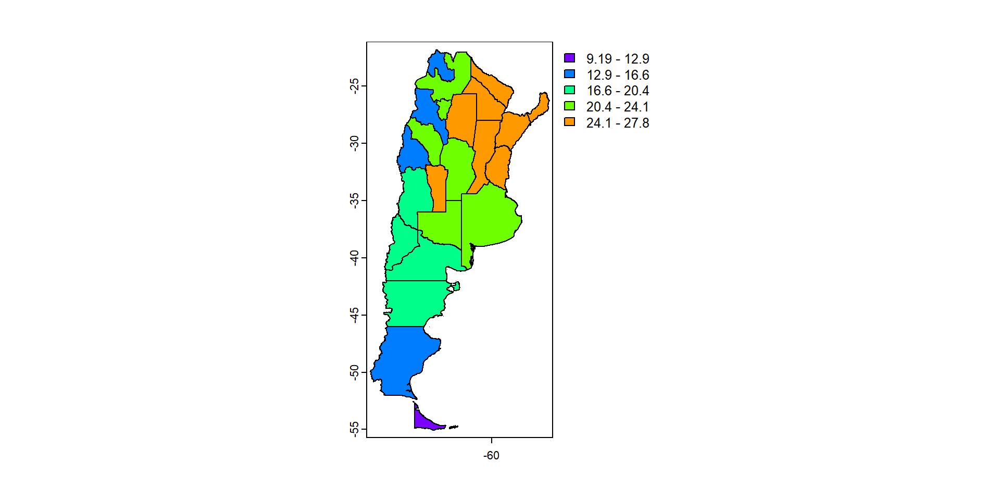Los objetos raster se puede operar matemáticamente con ellos para generar estadísticos
En general se puede usar cualquiera de estas funciones: min, max, mean, prod, sum, median, cv, range, any y all.
También hay multitud de funciones avanzadas propias de un SIG, tanto para vectoriales como raster
crop, trim, merge, disagg, resample, classify o cover
gdistance package ofrece análisis de distancias complejos (least cost path, etcétera)
Last but not least. Se pueden transformar datos vectoriales en raster …
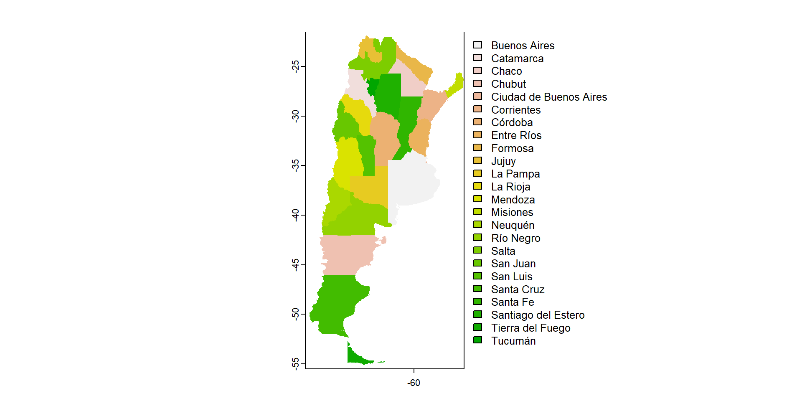… y viceversa
Hora de trabajar por vuestra cuenta…
Ejercicios de clase
Parte 3. Manipulación de datos raster y vectoriales